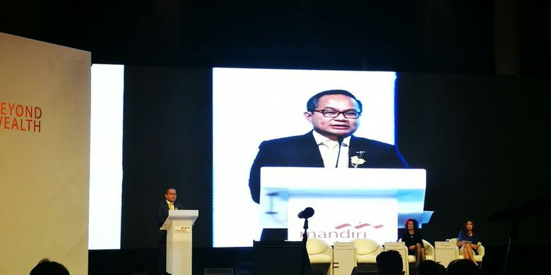

Dirut mandiri : investasi di deposito makin tidak menguntungkan
ACHMAD FAUZI
KabarKabur.com - 26/09/2017, 16:48 WIB

Direktur Utama Bank Mandiri, Kartika Wirjoatmodjo dalam sebuah Seminar di Hotel Ritz Carlton, Jakarta, Selasa (26/9/2017).
Direktur Utama Bank Mandiri Kartika Wirjoatmodjo menilai berinvestasi dalam produk deposito semakin tidak menguntungkan bagi nasabah. Sebab, ke depan suku bunga deposito akan terus menurun.
"Suku bunga acuan di Indonesia terus turun. Inflasi Indonesia tahun lalu hanya 3 persen sehingga hal ini menyebabkan suku bunga deposito turun dari 7 persen menjadi 6,25 persen. Satu dua tahun ke depan, bunga deposito mengarah ke 5 persen, sehingga investasi di deposito semakin tidak menguntungkan," ujar Kartika dalam sebuah Seminar di Hotel Ritz Carlton, Jakarta, Selasa (26/9/2017).
Oleh sebab itu, Kartika menyarankan kepada nasabah untuk berinvestasi di produk lain, seperti unit link. "Investasi lain, seperti unit link dan pasar uang bisa menjadi pilihan nasabah," kata dia.
Menurut dia, Bank Mandiri juga menyediakan produk-produk investasi untuk nasabah mulai dari yang berisiko tinggi sampai rendah.
"Tentunya, ini menjadi pekerjaan rumah kami sebagai penyedia jasa wealth management untuk mampu mengarahkan dan advise nasabah, bagaimana membangun portofolio nasabah. Sehingga mempunyai risk return profile yang sesuai dengan permintaan nasabah," tutur dia.
Kartika juga menyatakan, bank yang tergabung dalam Himpunan Bank Negara (Himbara) bakal menurunkan suku bunga deposito secara serentak. Kebijakan ini akan diterapkan dalam waktu dekat.
"Kami sepakat akan taruh (suku bunga deposito) di kisaran 6,35 persen, adapun sekarang sekitar 6,75 persen," imbuh dia.
Penulis : Achmad Fauzi
Editor : Muhammad Fajar Marta